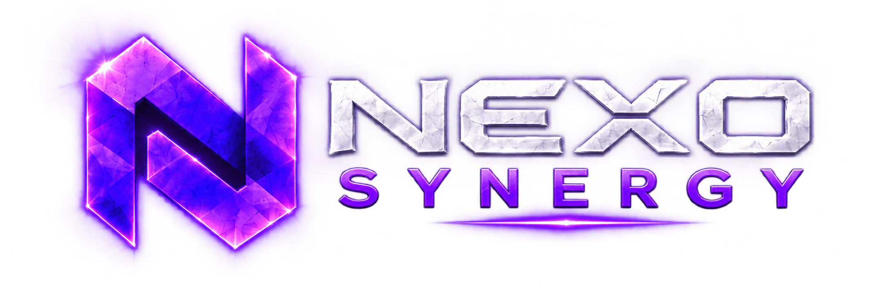
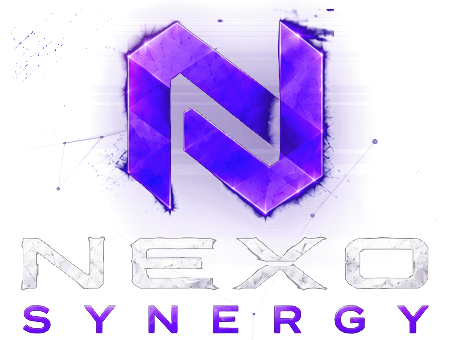

ATIVIDADE
Últimos 14 diasMovimentação da comunidade
Carregando atividade...
Lives Raids

ANALYTICS Explorar membros
Acompanhe cada transmissão, cada raid e a força da colaboração entre criadores da NEXO.
CRIADORES CONECTADOS ✧ CRESCIMENTO COLETIVOUma visão clara da atividade e das conexões da comunidade.
Carregando atividade...
Dados individuais e histórico de colaboração.
Carregando streamers...
Resultados verificados, eventos externos e períodos sem informação.
| STREAMER | INÍCIO / FIM | DURAÇÃO | RAID | VIEWS | COBERTURA | ATUALIZADO |
|---|---|---|---|---|---|---|
| Carregando histórico... | ||||||
Se houver falha na captura, o evento é classificado como inconclusivo — nunca como ausência comprovada de raid.